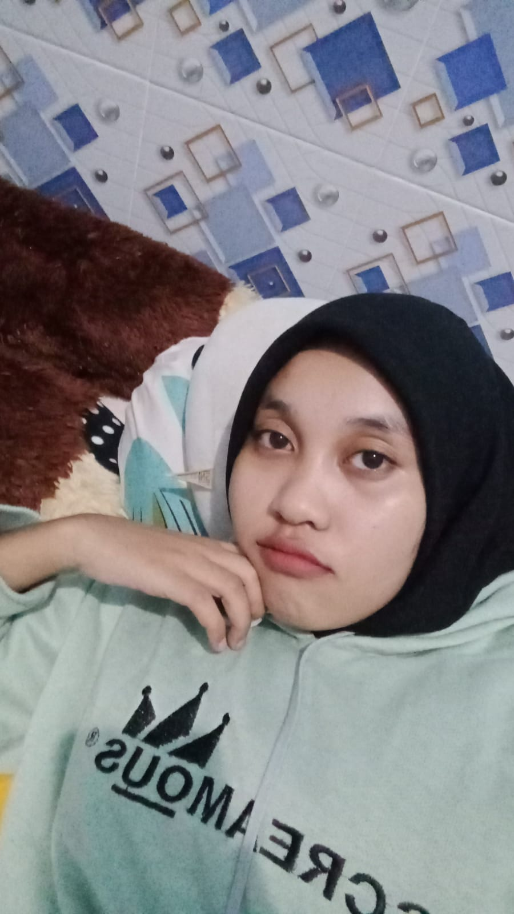
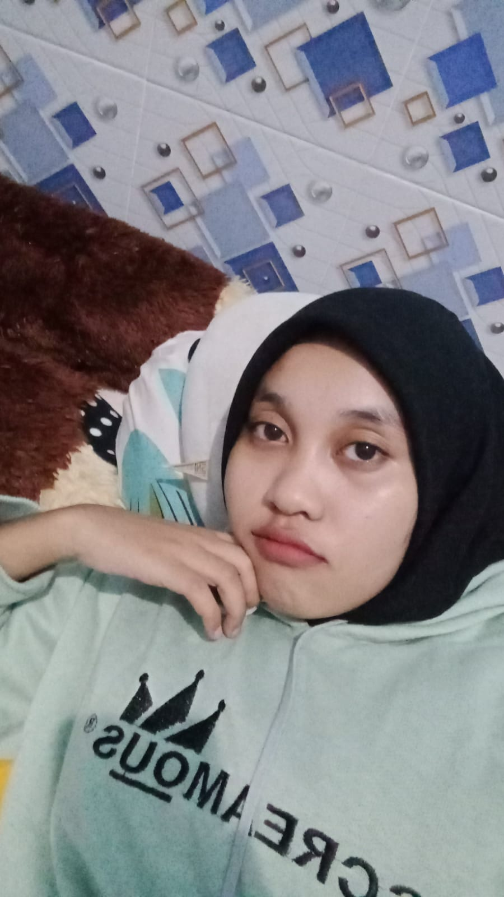
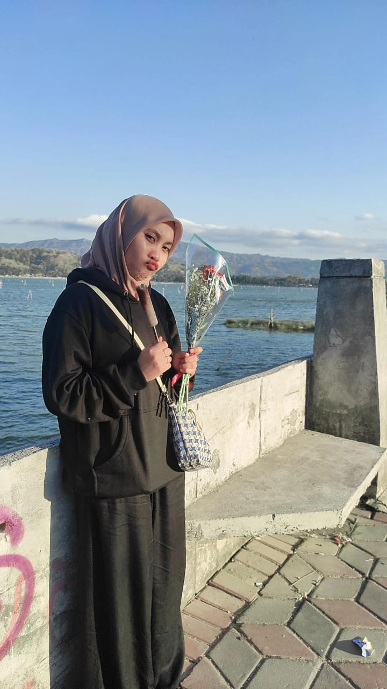
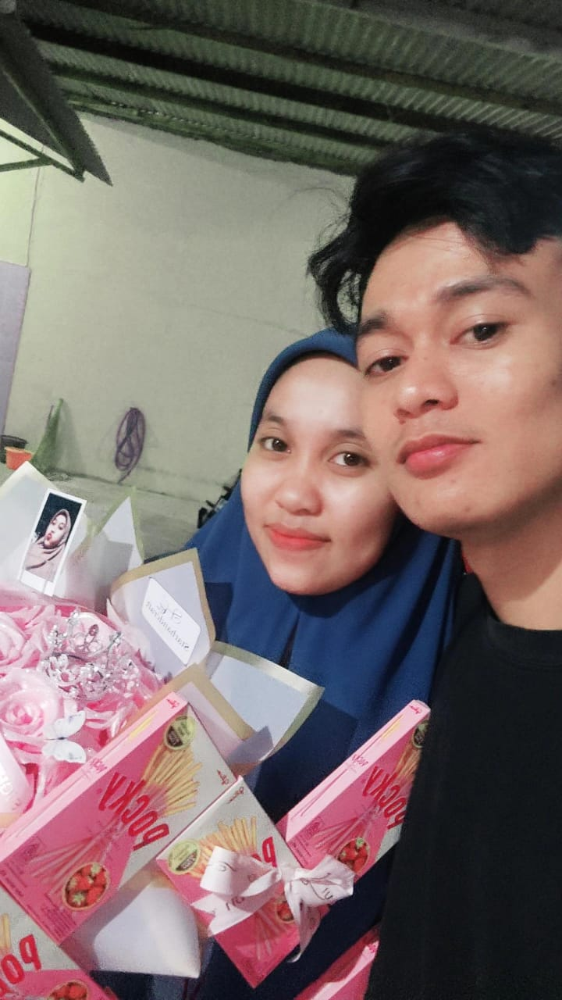
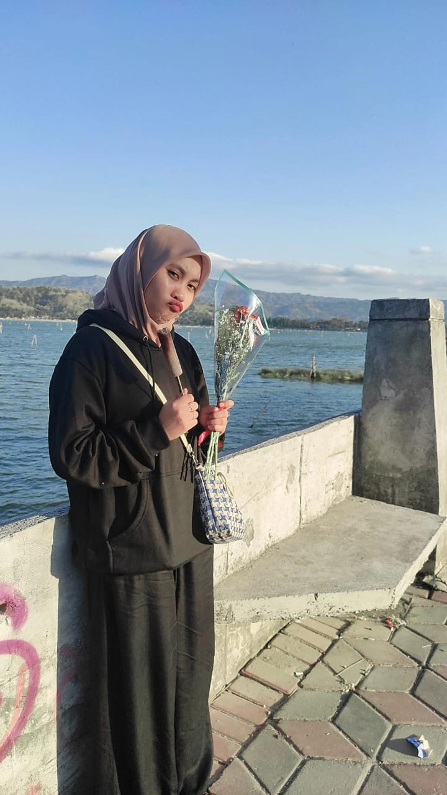
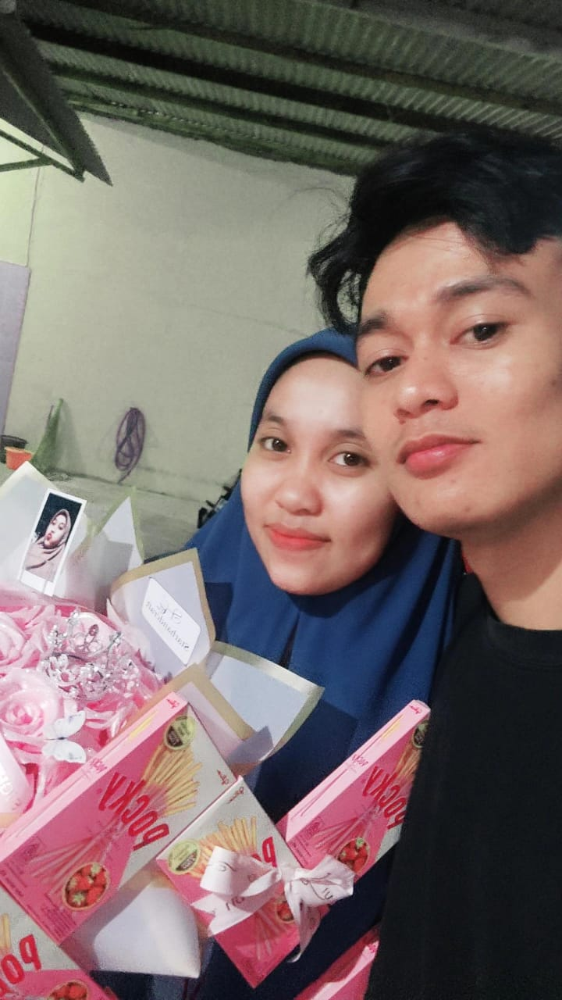

Semoga Kamu suka yaa cantik!
Hi, Happy Birthday to the sweetest kid I've ever seen.
Profil

Nama: Windiyanti
Tanggal Lahir: 30 November 20XX
Hobi: Treveling, Jajan, Ngambek, Marah, Tantrum.
"Windiyanti, seorang gadis dengan pesona yang unik. Kecantikannya tidak hanya terpancar dari wajahnya, tetapi juga dari kepribadiannya yang lembut dan hangat. Dengan senyum yang selalu menghiasi wajahnya, Windiyanti mampu membuat orang-orang di sekitarnya merasa nyaman dan bahagia. Meski terlihat kuat dari luar, Windiyanti sebenarnya cukup mudah tersentuh. Hal-hal kecil, seperti mendengar cerita menyentuh atau melihat orang lain sedih, bisa membuatnya menitikkan air mata. Dia gampang cengeng, tapi justru itulah yang membuatnya begitu istimewa—rasa empatinya begitu dalam. Windiyanti juga manja dalam cara yang membuat orang merasa istimewa saat merawatnya. Dia punya kebiasaan mengandalkan orang-orang terdekatnya untuk hal-hal kecil, tapi itu justru yang membuatnya menggemaskan. Dia bukan tipe yang meminta banyak, tapi selalu tahu cara menunjukkan bahwa perhatianmu berarti baginya. Setiap kali dia tidak ada, ada sesuatu yang terasa kurang. Kehangatan dan sifat manisnya membuat orang selalu merindukannya. Windiyanti mungkin manja dan gampang cengeng, tapi dalam hatinya tersimpan kekuatan dan kebaikan yang membuat semua orang tak bisa jauh darinya."
Sedikit Sambutan
"Selamat ulang tahun, sayangku. Hari ini, aku merasa begitu beruntung bisa merayakan hari spesial ini bersamamu. Setiap momen yang kita lalui, baik suka maupun duka, semakin menguatkan cinta kita. Terima kasih telah menjadi sosok yang begitu berarti dalam hidupku—teman terbaik, kekasih, dan inspirasi setiap hari. Aku berdoa agar setiap langkah yang kamu ambil ke depan dipenuhi kebahagiaan, cinta, dan kesuksesan. Tak peduli apa pun yang terjadi, aku selalu ada di sampingmu, mendukung dan mencintaimu dengan sepenuh hati. Semoga di tahun ini, semua impianmu dapat terwujud dan hidupmu dipenuhi oleh tawa serta momen-momen tak terlupakan. Aku mencintaimu lebih dari kata-kata bisa ungkapkan. Selamat ulang tahun, cinta. Semoga hari ini menjadi awal dari tahun penuh berkah dan keajaiban untukmu."
Ucapan Selamat
- Dear Windiyanti,
- "Selamat ulang tahun untuk wanita paling spesial dalam hidupku! 🌸✨ Di hari yang penuh kebahagiaan ini, aku ingin mengucapkan betapa beruntungnya aku bisa mengenal seseorang seindah dirimu. Kamu adalah sosok yang begitu cantik, bukan hanya dari luar tapi juga dari dalam. Senyum manismu selalu bisa membuat hariku cerah, dan manjamu yang lucu selalu menghangatkan hatiku. Kadang, saat kamu cengeng, justru itu yang membuatmu semakin memikat, karena di setiap tangismu, ada kelembutan dan ketulusan yang begitu jarang ditemui. Kamu itu orang yang sangat baik hati, selalu peduli pada orang lain, dan nggak pernah ragu memberikan yang terbaik untuk orang-orang yang kamu cintai. Kamu selalu mendahulukan kebahagiaan orang lain, dan itulah yang membuat kamu begitu istimewa. Semoga di hari ulang tahunmu ini, semua kebaikan yang kamu tanam selama ini kembali kepadamu dengan berlipat ganda. Aku harap kamu selalu dikelilingi cinta, kebahagiaan, dan kesuksesan di setiap langkahmu. Semoga semua mimpi-mimpimu terwujud, dan setiap harimu dipenuhi tawa dan senyuman. Di tahun baru dalam hidupmu ini, jangan pernah ragu untuk menjadi dirimu sendiri, karena dirimu yang apa adanya itu sudah sangat sempurna. Ingat, meski ada hari-hari yang mungkin terasa berat, aku akan selalu ada di sampingmu, mendukungmu, dan memberikan semangat. Kamu nggak pernah sendiri, karena ada begitu banyak orang yang menyayangimu dan menghargai setiap sisi dari dirimu. Selamat ulang tahun, sayang! Semoga kebahagiaan selalu menemanimu, dan dunia selalu tersenyum untukmu seperti kamu selalu menyebarkan kebahagiaan ke sekitarmu. Teruslah bersinar dengan cara kamu yang unik. Aku cinta kamu, dan aku bangga bisa menjadi bagian dari hidupmu. Happy birthday, beautiful soul! 🎉💖""
- "With love,"
- "Aldi Mustofa,"
Our Sweet Memories


 

 


